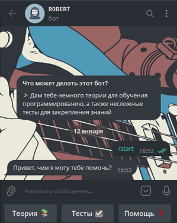
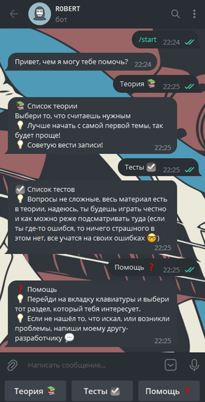
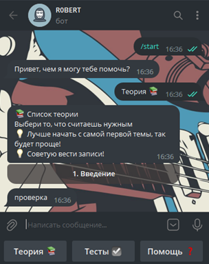
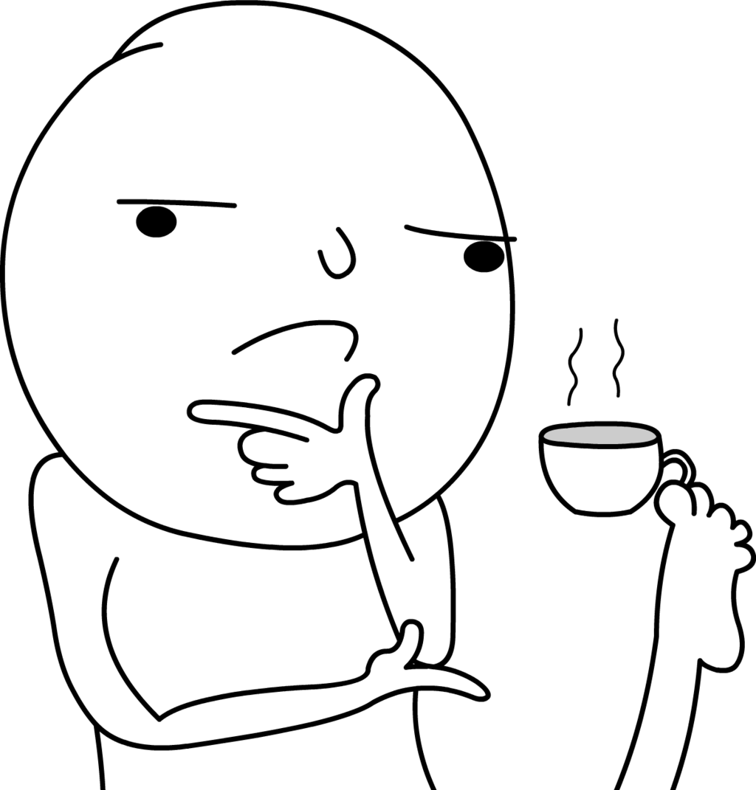

Добавление функций
Чтобы у пользователя возникало как можно меньше вопросов, я решила немного оптимизировать код
для бота. Пользователь сможет управлять ботом с помощью кнопок, но возможность отправлять текстовые
сообщения
останется.
Писать продолжение я буду на основе прошлого кода. Начало точно такое же; в терминале пишем строчку
(если Вы пишите в том же самом документе, то делать это не обязательно):
pip install pyTelegramBotAPI
Первые строчки:
import telebot #импорт(подключение) модуля telebot
#переменная, где лежит цифровой ключ, полученный у @BotFather (большая строка символов)
TOKEN = ' '
bot = telebot.TeleBot(TOKEN) #переменная, где находится сам бот
Далее создаём клавиатуру. При нажатии на кнопки боту будет отправляться текстовое сообщение, на которое он должен отреагировать. Важно отметить, что клавиатура «вызывается» в последней строчке, так как сначала идёт её создание, а уже потом применение:
#метод для выполнения команд из клавиатуры (отправляет текст из кнопок боту)
@bot.message_handler(commands=['start'])
def start_message(message):
keyboard = telebot.types.ReplyKeyboardMarkup(True) #создание клавиатуры
keyboard.row("Теория 📚", "Тесты ☑", "Помощь ❓")
#нижняя строчка обязательно пишется в конце функции, т.к. сначала происходит её создание и описание
bot.send_message(message.chat.id, "Привет, чем я могу тебе помочь?", reply_markup=keyboard)
Не забываем про последнюю строчку:
#обязательная строчка, без которой бот не будет работать (его запуск)
bot.polling(none_stop=True, interval=0)
И пишем в терминале:
python name.py
Должно получиться следующее:
Бот ещё не умеет отвечать на наши сообщения, давайте это исправим. Между блоком метода и последней строкой создаём новый метод для ответа на наши сообщения:
#метод для ответа на сообщения
@bot.message_handler(content_types=['text'])
def get_text_messages(message):
if message.text == "Теория 📚" or message.text == "Теория" or message.text == "теория":
bot.send_message(message.from_user.id, "📚 Список теории\nВыбери то, что считаешь нужным\n💡 Лучше "
"начать с самой первой темы, так будет проще!\n💡 Советую вести записи!")
elif message.text == "Тесты ☑" or message.text == "Тесты" or message.text == "тесты":
bot.send_message(message.from_user.id, "☑ Список тестов\n💡 Вопросы не сложные, весь материал есть в теории, "
"надеюсь, ты будешь играть честно и как можно реже подсматривать туда "
(если ты где-то ошибся, то ничего страшного в этом нет, все учатся на "
"своих ошибках 🤓)")
elif message.text == "Помощь ❓" or message.text == "Помощь" or message.text == "помощь" or message.text == "/help":
bot.send_message(message.from_user.id, "❓ Помощь\n💡 Перейди на вкладку клавиатуры и выбери тот раздел, "
"который тебя интересует.\n💡 Если не нашёл то, что искал, или возникли проблемы, напиши моему другу-разработчику 💬")
else:
bot.send_message(message.from_user.id, "Я тебя не понимаю. Напиши /help.")
Обновляем работу бота через терминал:
python name.py
Итак, этот этап почти закончен, сверяемся:
Теперь ботом можно управлять с помощью новой клавиатуры! Осталось добавить информацию, которую
бот будет отправлять пользователю.
Немного меняем строчки кода (остальное остаётся в том же виде):
#метод для ответа на сообщения
@bot.message_handler(content_types=['text'])
def get_text_messages(message):
if message.text == "Теория 📚" or message.text == "Теория" or message.text == "теория":
murkup = telebot.types.InlineKeyboardMarkup(1) #создание кнопки под сообщением (row_width=1 - одна кнопка под сообщением)
th_1 = telebot.types.InlineKeyboardButton('1. Введение', callback_data='theory_1') #текст внутри кнопки и её "ссылка"
murkup.add(th_1) #добавление кнопки
bot.send_message(message.chat.id, "📚 Список теории\nВыбери то, что считаешь нужным\n💡 Лучше "
"начать с самой первой темы, так будет проще!\n💡 Советую вести записи!",
reply_markup=murkup)
#метод для ответа на нажатие кнопки под сообщением
@bot.callback_query_handler(func=lambda call:True)
def callback(call):
if call.message:
if call.data == 'theory_1':
bot.send_message(call.message.chat.id, 'проверка')
Не забываем перезапустить бота строчкой в терминале:
python name.py
Сверим результат:
Итак, мы вышли на финишную прямую, осталось совсем немного! Основные моменты написания кода разобраны, дальше применяем свою фантазию и эрудицию и заполняем бота.
